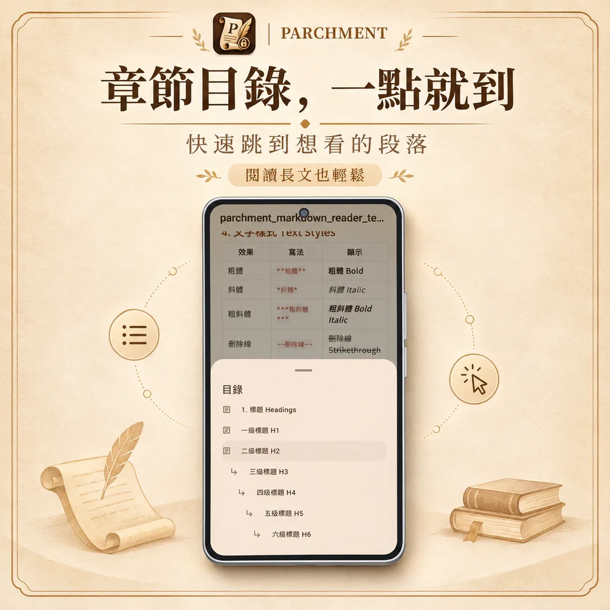
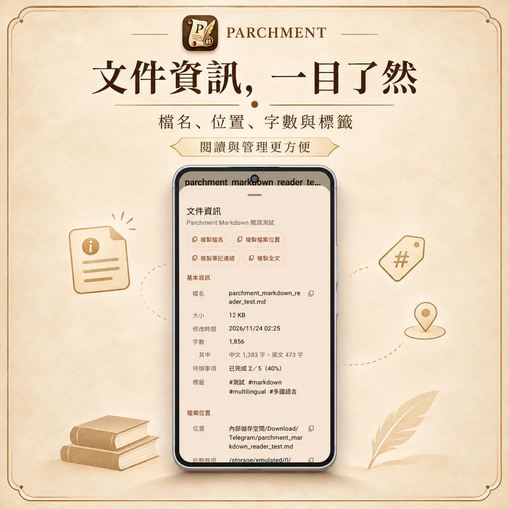

Android 앱 내부·비공개 테스트 모집 중
휴대폰에서 .md 파일 읽기
Parchment는 Markdown·일반 텍스트 리더 앱입니다. .md 파일을 받으면 Parchment로 열기만 하세요. 기호투성이 글 대신 깔끔하게 정리된 문서로 볼 수 있습니다.
Google Play 내부 테스트와 비공개 테스트에 참여할 Android 사용자를 모집합니다. 14일 이상 직접 사용해 보시고 좋은 점과 개선할 점을 알려 주세요.
무료이며 계정이 필요 없습니다. 문서는 휴대폰 안에서만 열리고 업로드되지 않습니다.

주요 기능

깔끔한 Markdown 보기
표, 코드, 수식, 순서도까지 제대로 정리해 보여 줍니다. 문서 맨 앞의 제목, 작성자, 태그 같은 정보도 보기 좋은 표로 정리합니다.

로컬 파일을 자유롭게 열기
파일 하나만 열 수도, 노트 폴더 전체를 열 수도 있습니다. 카카오톡, Gmail, 파일 관리자에서 받은 .md 파일도 바로 Parchment로 열 수 있습니다.

목차로 바로 이동
긴 문서는 목차가 자동으로 만들어져, 누르기만 하면 원하는 부분으로 이동합니다.

문서 정보를 한눈에
파일 이름, 크기, 수정 시간, 글자 수, 할 일 진행률, 태그를 한곳에서 보여 주고, 파일 이름·위치·전체 내용을 한 번에 복사할 수 있습니다.
- 다섯 가지 색상 테마와 한글 글꼴 내장. 글자 크기와 줄 간격도 조절할 수 있고 설정은 자동 저장됩니다.
- 할 일 목록을 바로 체크하고, 확인한 뒤 원래 파일에 저장할 수 있습니다.
- 화면은 한국어를 포함한 8개 언어를 지원합니다.
- 오프라인에서도 읽을 수 있으며, 웹 이미지나 글꼴을 내려받을 때만 인터넷에 연결합니다.
내부·비공개 테스트 참여 방법
- 신청서 작성닉네임과 Google Play에서 쓰는 Google 계정 이메일을 입력합니다.
- 초대 기다리기이메일을 내부 테스트 또는 비공개 테스트 명단에 추가하고 초대 메일을 보내 드립니다.
- 전용 링크로 참여신청만으로는 아직 참여한 것이 아닙니다. 초대 메일의 링크를 열어 Google Play 테스트에 참여해 주세요.
- Google Play에서 설치참여 후 Google Play에서 Parchment를 설치할 수 있으며, 업데이트도 자동으로 받습니다.
- 14일 이상 사용 후 의견 보내기
.md파일을 볼 때 사용해 보시고, 문제나 제안이 있으면 알려 주세요.
신청서는 중국어로 되어 있습니다. 세 가지만 입력하세요: 稱呼或暱稱(닉네임), Google Play 使用的 Google 帳號 Email(Google Play에서 쓰는 이메일), 是否有 Android 手機(有를 선택). 마지막으로 我已閱讀並同意(동의함)에 체크하고 제출하면 됩니다.
- Google Play를 쓸 수 있는 Android 휴대폰(Android 7.0 이상). iOS 버전이 없어 iPhone과 iPad로는 참여할 수 없습니다.
- Google Play에 로그인한 Google 계정.
테스트 문서 내려받기
앱을 설치한 뒤 테스트 문서를 내려받아 사용해 보세요. 제목, 표, 코드, 수식, 다이어그램, 콜아웃, 웹 이미지, 여러 언어의 글까지 다양한 Markdown을 한 번에 확인할 수 있습니다.
- 한국어.md 다운로드
- 繁體中文.md 下載
- 简体中文.md 下载
- EnglishDownload .md
- 日本語.md をダウンロード
- FrançaisTélécharger le .md
- Deutsch.md herunterladen
- EspañolDescargar .md
- РусскийСкачать .md
내려받은 뒤 Parchment에서 「파일 열기」를 눌러 「다운로드」 폴더의 문서를 고르세요. 파일 관리자나 카카오톡에서 파일을 눌러 Parchment로 열 수도 있습니다.
더 많은 템플릿: 회의록, 프로젝트 계획서, 수업 노트, 독서 노트, 비교표, 진행표 →
개인정보
신청 정보(닉네임과 Google 계정 이메일)는 테스트 초대, 참여 자격 확인, 테스트 관련 연락에만 사용하며 공개하거나 광고에 쓰지 않습니다. 더 이상 필요 없는 정보는 테스트 종료 후 90일 이내에 삭제합니다. 자세한 내용은 신청서의 안내를 확인하세요.
Parchment 앱 자체는 계정이 필요 없고 사용 데이터를 수집하지 않습니다. 개인정보 처리방침을 참고하세요.
Google Play가 없나요?
GitHub에서 설치 파일(APK)을 내려받아 휴대폰에서 열고 설치를 허용할 수도 있습니다. 직접 내려받은 버전과 Google Play 버전은 서로 업데이트되지 않으니, 나중에 Google Play 버전으로 바꾸려면 먼저 삭제해 주세요.
Parchment를 함께 더 좋게
1분이면 신청 완료. 첫 번째 테스터가 되어 주세요.